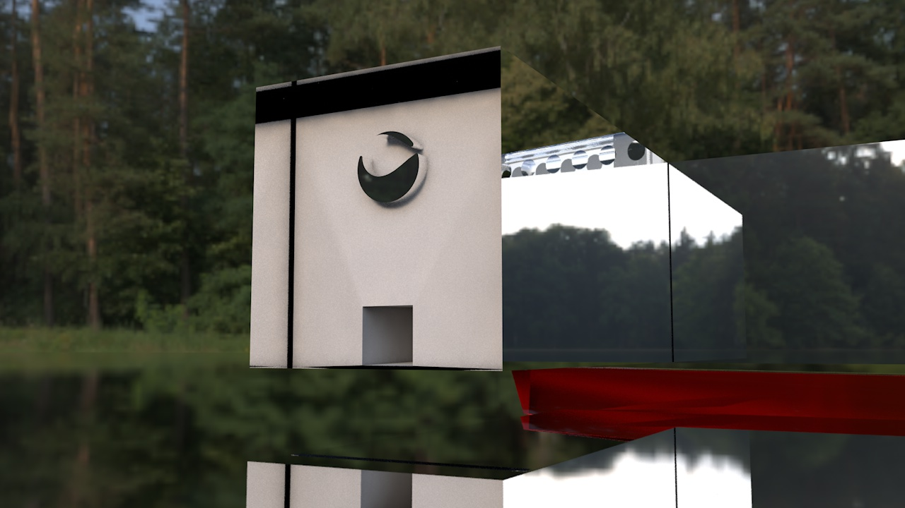
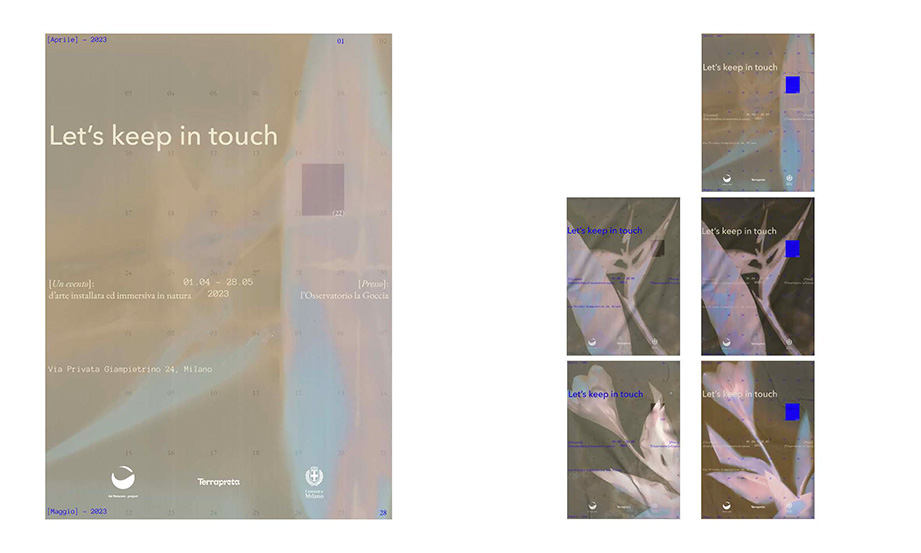

02 / Il primo capitolo
Studi sulla luce.



Questa sequenza è un'anteprima editoriale costruita con le tre immagini già caricate su Supabase. Il capitolo registrato nel database è ancora una bozza.
Un archivio di studi, immagini e racconti. Ogni progetto ha una propria sequenza, un proprio ritmo e lo spazio necessario per essere osservato.

Questa sequenza è un'anteprima editoriale costruita con le tre immagini già caricate su Supabase. Il capitolo registrato nel database è ancora una bozza.
La materia rende visibile ciò che la luce attraversa. Una ricerca fra trasparenze, riflessi e geometrie.
Testo editoriale provvisorio
Tutte le 18 fotografie sono state caricate su Supabase Storage. Qui sono incluse anche in copia locale per una visualizzazione immediata.



Connessione al database in corso…
Le bozze non sono disponibili pubblicamente. Per modificare «Studi sulla luce» nel database, completeremo il collegamento a JD Studio.
JD STUDIO — IN PREPARAZIONE